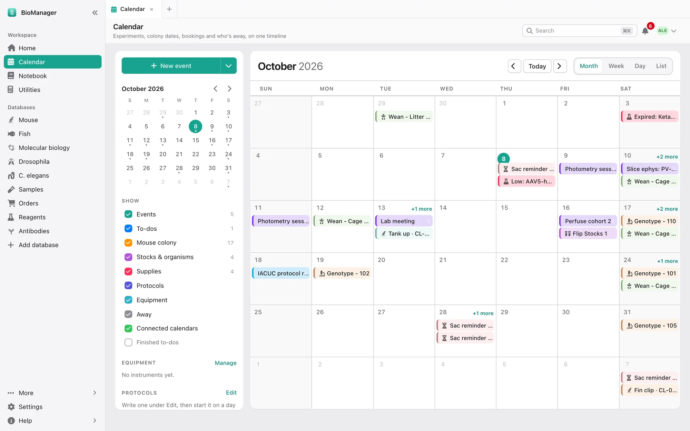

Your databases
Calendar
Experiments, to-dos and bookings, with the colony's dates filled in for you.
- Month, Week, Day and List views. Filled in for you: weanings, genotyping and sac reminders, fly and worm flips and
egg collections, organism schedules, zebrafish tanks and reagent expiry. Clicking one (once, in every view) opens the record it
came from. A link can open a given view and day:
/calendar?view=week&date=2026-10-05. - The sidebar has a small month to jump around, a Show list with a colour and a count for each kind (events, to-dos, the colony, stocks and organisms, supplies, protocols, equipment, time away, connected calendars), the instruments and the protocols under way.
- New event offers an event, a to-do (due today, tomorrow, next week, or a date), Book equipment, Time away and Start a protocol. Drag an event, to-do or booking to move it.
- Who sees it, for an event or a to-do: Only me, Everyone in the lab or one of your project groups. Your own is seen by nobody else, admins included. A shared event is changed only by whoever added it and admins; a shared to-do anyone it is for can tick off. A new event starts as the lab's, a new to-do as yours.
- Repeats: an event every N days, weeks or months, or every month on the same weekday (the first Monday), until a date. Delete this one takes out a single date and Change this one only moves or changes it alone; Save changes every repeat.
- Protocols: write the steps once in days from day 0 (tamoxifen days 0–4, implant day 14, perfuse day 42), then start it for an experiment or a cohort. Every step lands on its day; move day 0 and they all move. A run keeps the steps it started with if the protocol is edited later. (These put the days on the calendar; the notebook's protocols hold the bench steps.)
- Equipment: add the lab's instruments under Manage, and Edit one there to rename it, say where it is or change its colour; its bookings follow. A booking that overlaps another is refused, saying who has it and when. A new booking can repeat every day, weekday or week until a date — each repeat is a booking of its own, and if one clashes none is made. Duplicate, on an open booking, books the same instrument and times on another day.
- Time away: leave or a conference. Away soon lists what of theirs falls due meanwhile — animals, vials, to-dos, bookings, protocol steps — and asks who covers it; that person is told.
- Connected calendars shows Google Calendar and any iCal subscription alongside, read-only.
- On your phone: a private link (just your things, or the whole lab's) for Apple, Google or Outlook Calendar. It updates about every hour. Make a new link stops the old one working.

Was this page helpful?
No